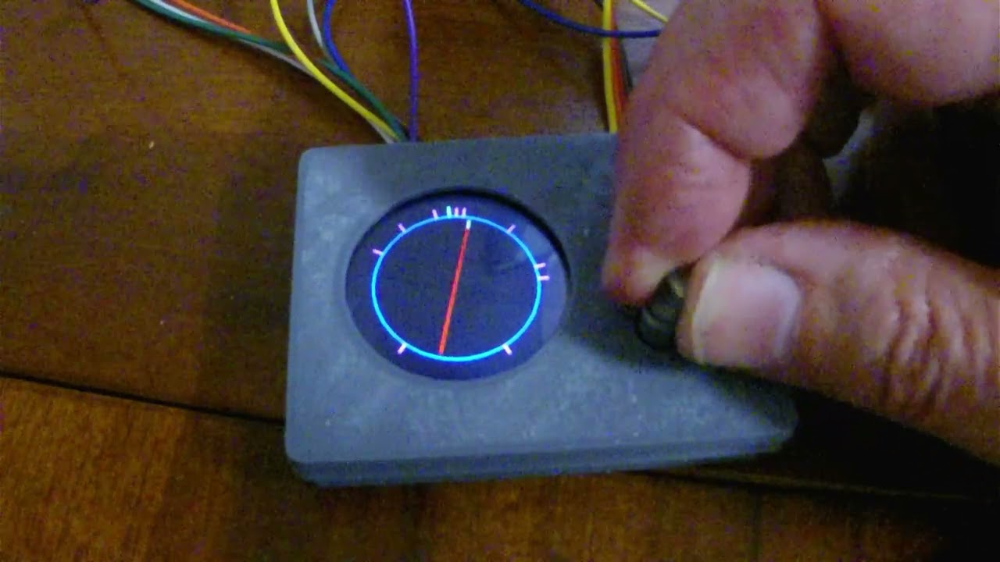

Turntable Controller
In turntable controller mode, a GC9A01 round LCD displays a representative turntable with each pre-defined position indicated around a representative turntable pit.
Rotating the rotary encoder will rotate the representative turntable in either a clockwise or anti-clockwise direction.
When the representative turntable’s home end aligns with either the home position or any of the predefined turntable positions, the textual description of the position will be displayed, and the home end of the representative turntable will be highlighted.
When aligned in this manner, a single button press will send the predefined position’s ID to the EX-CommandStation.
The device driver also has the ability to send feedback to the rotary encoder software to indicate when a turntable is moving or stationary. This allows for a visual indication of when the turntable is in motion by blinking the representative turntable on the display until the move has completed.
Refer to
Clicking on the image below will take you to a short video of this mode in action.
Hardware details

A suitable rotary encoder (tested on KY-040) and GC9A01 round LCD connected to a suitable AVR based Arduino (tested on a Nano) is all required for the turntable controller functionality, with the Arduino connected to your EX-CommandStation via I2C as outlined in the Fritzing diagram.
The GC9A01 display in use is a Waveshare brand display.
There is a fairly detailed Waveshare Wiki for this device also.
Configuration options
Various configuration options can be edited in the file “config.h”. By default, this file does not exist, and an example file “config.example.h” with the various options has been provided. It is recommended to copy the example file to your own “config.h”, as the example file will be overwritten by any future changes to the software.
For general configuration options, refer to General configuration options.
Turntable mode configuration options
Option |
Default |
Details and options |
|---|---|---|
GC9A01_DIN |
11 |
GC9A01 DIN pin |
GC9A01_CLK |
13 |
GC9A01 CLK/clock pin |
GC9A01_CS |
10 |
GC9A01 CS/chip select pin |
GC9A01_DC |
7 |
GC9A01 DC pin |
GC9A01_RST |
8 |
GC9A01 RST/reset pin |
GC9A01_BL |
9 |
GC9A01 BL/backlight pin |
GC9A01_ROTATION |
0 |
Rotates the display, set to 0 for none, 1 for 90 degrees, 2 for 180 degrees, and 3 for 270 degrees |
GC9A01_IPS |
true |
Set “true” to correctly display colours, only change if using a different display as per the GFX library |
PIT_OFFSET |
30 |
Number of pixels to inset the representative turntable pit |
/////////////////////////////////////////////////////////////////////////////////////
// START: TURNTABLE mode configuration options.
/////////////////////////////////////////////////////////////////////////////////////
#define GC9A01_DIN 11 // Define GC9A01 DIN pin
#define GC9A01_CLK 13 // Define GC9A01 CLK/clock pin
#define GC9A01_CS 10 // Define GC9A01 CS/chip select pin
#define GC9A01_DC 7 // Define GC9A01 DC pin
#define GC9A01_RST 8 // Define GC9A01 RST/reset pin
#define GC9A01_BL 9 // Define GC9A01 BL/backlight pin
// Rotation can be 0, 1 (90 degrees), 2 (180 degrees), or 3 (270 degrees)
// Rotates entire display
#define GC9A01_ROTATION 0
// Needs to be set true in order to correctly display colours
#define GC9A01_IPS true
// Number of pixels to inset the representation of the turntable pit.
#define PIT_OFFSET 30
/////////////////////////////////////////////////////////////////////////////////////
// END: TURNTABLE mode configuration options.
/////////////////////////////////////////////////////////////////////////////////////
Configuring the predefined positions
An example file “positions.example.h” has been included, however as per “config.h” it is recommended you copy this to your own “positions.h” file and edit to suit, as the example file will be overwritten by future software updates.
Valid position IDs are from 1 to 255 (0 is reserved for “Home”).
When defining the home angle and the various positions, the defined angle is in degrees from the top of the display, or what would be 12 o’clock on an analogue clock.
There are two configuration parameters required as per the table below.
Option |
Default |
Details and options |
|---|---|---|
HOME_ANGLE |
0 |
The angle at which the homing sensor is located on your actual turntable |
NUMBER_OF_POSITIONS |
10 |
The number of predefined positions representing your actual turntable (do not include “Home”) |
When configuring the predefined positions, the syntax is critical to prevent compiler errors.
Pay close attention to the instructions included in the “positions.example.h” file, which is also included here for reference.
/////////////////////////////////////////////////////////////////////////////////////
// NOTE: All angles are expressed in degrees from the top of the display, or in other
// words 12 o'clock on an analogue clock.
/////////////////////////////////////////////////////////////////////////////////////
#define HOME_ANGLE 0 // Define the angle in degrees for the home position mark
#define NUMBER_OF_POSITIONS 10 // Define the number of positions to be defined
/////////////////////////////////////////////////////////////////////////////////////
// You must define the exact number of positions as defined for NUMBER_OF_POSITIONS.
// The syntax must be correct for each line, and there must be no comma "," at the end
// of the last defined position.
// The syntax is:
/*
positionDefinition turntablePositions[NUMBER_OF_POSITIONS] = {
{angle, id, "description"},
{angle, id, "description"},
...
{angle, id, "description"}
};
*/
// Where:
// angle - Specified in degrees from the top of the display (12 o'clock)
// id - The identifier that will be sent to the CommandStation when selected (1 - 255)
// "description" - A 10 character or less position description to display when selected
/////////////////////////////////////////////////////////////////////////////////////
positionDefinition turntablePositions[NUMBER_OF_POSITIONS] = {
{5, 1, "Test 1"},
{10, 2, "Test 2"},
{45, 3, "Test 3"},
{80, 4, "Test 4"},
{90, 5, "Test 5"},
{150, 6, "Test 6"},
{220, 7, "Test 7"},
{300, 8, "Test 8"},
{325, 9, "Test 9"},
{350, 10, "Test 10"}
};
Configuring colours
An example file “colours.example.h” has been included, however as per “config.h” it is recommended you copy this to your own “colours.h” file and edit to suit, as the example file will be overwritten by future software updates.
Predefined colours are located in “Arduino_GFX.h” (included as part of the Arduino GFX Library), and you can define any colour you choose by specifying the appropriate hex value eg. 0x0000 is black, and 0xFFFF is white.
/////////////////////////////////////////////////////////////////////////////////////
// Define colour preferences in this file, refer to "Arduino_GFX.h" for the hex values
// of the existing colours defined with the Arduino GFX library.
/////////////////////////////////////////////////////////////////////////////////////
// Define any custom colours here using the appropriate hex value
// #define MY_COLOUR 0x1234
/////////////////////////////////////////////////////////////////////////////////////
// Define the colours to use for each object here
/////////////////////////////////////////////////////////////////////////////////////
#define BACKGROUND_COLOUR BLACK // Background colour for the display
#define TURNTABLE_COLOUR RED // Colour of the main turntable body
#define PIT_COLOUR BLUE // Colour of the pit line around the display
#define TURNTABLE_HOME_COLOUR LIGHTGREY // Colour of the home end of the turntable
#define HOME_HIGHLIGHT_COLOUR YELLOW // Colour of the home end when aligned with a position
#define HOME_COLOUR CYAN // Colour of the home position mark around the pit line
#define POSITION_COLOUR MAGENTA // Colour of each position mark around the pit line
#define POSITION_TEXT_COLOUR GREENYELLOW // Colour of the position's text description